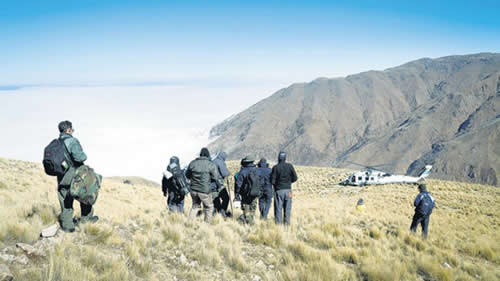

Real Chubut - Agencia de Noticias


Si no son funcionarios, que bajen caminando

Los medios provinciales y la redes sociales reflejaron la indignación por el rescate selectivo. La versión oficial señala que el helicóptero no volvió a buscar a los bomberos por el mal clima, pero en Catamarca señalan que nunca llegó a considerarse esa posibilidad.
Los funcionarios nacionales que debieron pasar la noche en la montaña luego del descenso de emergencia de un helicóptero en plena montaña de Catamarca fueron rescatados con éxito y todo parecía haber terminado felizmente, cuando diversos portales de noticias catamarqueños comenzaron a hacerse eco ayer de las críticas por un pequeño detalle: mientras los siete funcionarios más importantes –incluyendo al vocero personal del presidente Mauricio Macri, Iván Pavlovsky– fueron transportados de vuelta en un helicóptero que aportó la Presidencia, el resto de la comitiva y los rescatistas debieron bajar a pie y uno de ellos llegó con un cuadro de hipotermia. La versión oficial indica que las condiciones climatológicas no permitieron que el helicóptero hiciera un segundo descenso. Fuentes provinciales indican que desde Nación ni siquiera consideraron esa posibilidad.
El helicóptero de origen ruso que transportaba a Pavlovsky y el resto de la comitiva luego de la conferencia de prensa en la que Macri se dedicó a defender su veto a las tarifas sufrió problemas por el frío. Hizo dos intentos de aterrizaje en Tucumán y Río Hondo, pero había peligro de “engelamiento de las piezas vitales del aparato”, por lo que el piloto de la Fuerza Aérea –a la que pertenece la nave– decidió bajar de emergencia en Aconquija, Catamarca, en una zona de montaña de difícil acceso a 3400 metros sobre el nivel del mar. Allí debieron pasar la noche. El vocero presidencial relató que, como había poco combustible, prendían la calefacción por 15 minutos cuando no podían tolerar más el frío, y que racionaron el agua y las galletitas.
El incidente generó preocupación en el Gobierno: Macri envió a supervisar el rescate a la ministra de Seguridad, Patricia Bullrich, al de Transporte, Guillermo Dietrich, al secretario general de la Presidencia, Fernando de Andreis, y al secretario privado de Macri, Darío Nieto. Los cuatro se instalaron cómodamente en el Club House de un campo de golf en Santiago del Estero y desde allí dieron órdenes.
El sábado al mediodía partieron al rescate un grupo de Gendarmería, la policía de Catamarca junto con un baqueano que conocía la zona y bomberos voluntarios de Santa María, Andalgalá y Pomán. Finalmente, los hallaron. Bajaron junto con la comitiva presidencial hasta un campamento. Allí llegó un helicóptero Black Hawk 1, que pertenece a Presidencia. De los 13 rescatados, se llevó a siete: Pavlovsky; el jefe de la custodia presidencial, Alejandro Cecatti; el secretario privado de Macri, Mariano Lomolino; el encargado de redes sociales de Macri, Isidro Escalante; el fotógrafo David Sisso; el secretario de Agricultura, Guilermo Bernaudo, y el coordinador de Planeamiento y Gestión de Infraestructura Vial, Eduardo Plasencia. Los otros seis, integrantes de la Fuerza Aérea y tripulantes del helicóptero, quedaron junto con los rescatistas. El helicóptero presidencial ya no volvería a buscarlos. Debieron bajar a pie.
El club del helicóptero
Según relató a medios locales el bombero voluntario de Santa María Alfredo Medina, en el helicóptero presidencial “sólo llevaron a la gente de la presidencia, nunca volvieron a buscarnos, tuvimos que descender a pie”. Por su parte, el jefe de bomberos de Andalgalá, Miguel Tapia, indicó que “los rescatistas volvieron al campamento caminando. Todo el operativo terminó ayer cerca de las 19 horas. Y de allí fueron trasladados en vehículos, fueron recibidos en el hospital para corroborar que estaban bien. Uno de los bomberos tenía un principio de hipotermia. Fue estabilizado”.
Los medios catamarqueños indicaron cuál fue la recepción de ese gesto de dejar a los rescatistas: “Indignación tras el operativo de rescate del helicóptero presidencial”, puso en su tapa el periódico el Esquiú. “Bronca por el ‘abandono’ de los bomberos en el frío”, tituló el portal El Ancasti. “Los bomberos NO fueron rescatados”, informó el portal Valle Calchaquí Noticias. Fuentes provinciales, si bien existen protocolos para estos casos sobre quiénes deben ser evacuados primero según su estado de salud, indicaron que todas las decisión sobre el uso que se hizo del helicóptero de rescate las tomó el equipo presidencial. Particularmente mencionaron que la decisión la tomó el coordinador de Rescate de Nación, Sebastián Vega. Macri se la pasó pidiendo reportes a los cuatro funcionarios apostados en el club de golf sobre la condición de su vocero y el resto de sus funcionarios.
Un video que se hizo viral en las redes sociales ayer muestra una escena del descenso de los rescatistas, en medio de la nieve. En el audio, uno de los bomberos cuenta que “son las 17 y 21, llevamos prácticamente 17 horas en este rescate (N. de la R.: incluye el tiempo del ascenso), caminando prácticamente sin descansar. Comenzó a nevar nuevamente, la temperatura empezó a bajar y estamos a dos horas, más o menos, para el campamento”.
La explicación que dieron sobre por qué no retornó el helicóptero presidencial a retirar a los otros seis rescatados, además de a los bomberos, gendarmes y policías fue que las condiciones climatológicas no hubieran permitido un segundo descenso.
En el comunicado oficial que difundió presidencia sobre el tema, no hubo alusión a esto. Simplemente dice que, tras ser encontrados, “los recogió el helicóptero presidencial, luego de una caminata que duró entre cuatro y cinco horas”. Y que esto fue en “una zona adonde llegó el avión (sic) presidencial H1 para llevarlos hasta Santiago del Estero, después de tener que realizar una maniobra precisa de aterrizaje en la montaña por causa de las dificultades que presentaba la orografía del lugar”.
Cuando todo terminó, el presidente agradeció “el profesionalismo” de los rescatistas. “Quiero agradecer a todas las personas que participaron de su rescate, a los pilotos por su profesionalismo para manejar esta situación”, indicó el mandatario sobre los hombres que subieron con temperaturas inferiores a diez grados bajo cielo, con mulas y a pie a llevarle provisiones y abrigo a los que quedaron varados. Y luego bajaron por el camino por el que vinieron hasta llegar a las 4x4 que habían dejado en la zona donde empezaron la travesía a campo traviesa. Se sabe: el helicóptero no es para todos.
Fuente: Pagina12